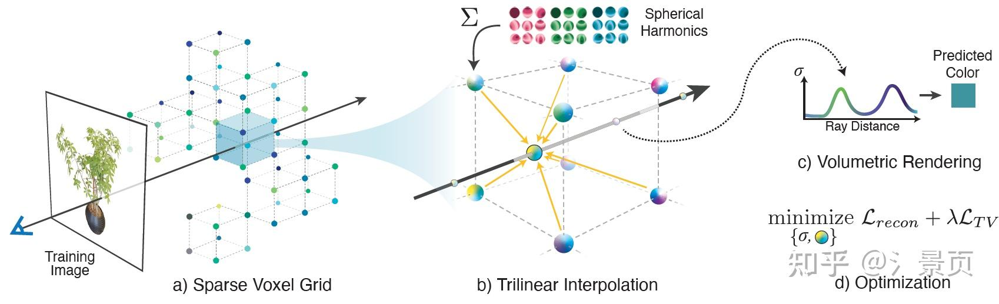

【转载】NeRF系列工作总结
# 前言
在 NeRF 这个领域也算做了有一段时间了，这段时间在知乎上很难看到有比较有深度还有系统性的关于 NeRF 的总结。于是萌生了写这个个人总结的想法，也算是给自己的一个交代。我将沿着我自己工作的方向来介绍几篇关键的工作。我目前做的是多视角重建方向，所以我更关注细节、速率以及几何方面，最近比较火的动态方向反而没有过多关注，因此动态的部分也不会在这里介绍。本份个人总结带有较大的个人色彩，有些观点大家批判性地看就好，希望大家多给反馈。这个总结是从 obsidian 上迁过来的，也不知道排版会不会有什么问题。
知乎的编辑器将笔记里面的很多换行替换成空格了，一开始没有注意，所以出现了很多分段粘连起来的情况，很抱歉给大家的阅读带来了困难。现在已经进行分段了，放心食用。
第一次写这么长的文章，可能文笔不太好，也可能存在一些行文逻辑的漏洞，欢迎各位同学指正，有空会进行修改。
之后我也会将我对 NeRF 相关的系列工作解读放入了以下专栏中，该专栏在闲暇之余会抽空更新： NeRF系列工作总结
# NeRF[1]
NeRF用MLP拟合了一个辐射场： (x,y,z,θ,ϕ)→(RGBσ) ，如下图所示：
Figure: An overview of our neural radiance eld scene representation and differentiable rendering procedure. We synthesize images by sampling 5D coordinates (location and viewing direction) along camera rays (a), feeding those locations into an MLP to produce a color and volume density (b), and using volume rendering techniques to composite these values into an image (c). This rendering function is differentiable, so we can optimize our scene representation by minimizing the residual between synthesized and ground truth observed images (d).
具体实现和形式不再展开，其中有两点细节要说明，一点是 Positional Encoding，另一点则是 Coarse-to-Fine，即 Hierarchical Sampling。
# Positional Encoding
为什么要引入 Positional Encoding，即人为地引入高频信息，是因为作者发现 MLP 更倾向于学习低频信号，这点在 [2, 3] 中均有理论性的说明，同时 [4] 还给出了 Positional Encoding 能凑效的推导。
就我个人而言，MLP 通常由多层的参数矩阵组成，在计算即前传的过程中，还存在着大量的非线性激活，这使得 MLP 具有非常良好的插值性质，能够输出足够平滑的结果（我们老师将之称为 Deep Prior，我个人理解是属于 MLP 的 inductive bias），但这也意味着 MLP 难以捕获到变化剧烈的区域的特征（即高频特征）。
对于 Positional Encoding，从一方面来讲，它将欧式空间的样本点投影到频率空间，也就是将点打散了，在欧式空间相近的点在频率空间就会很远。原本 MLP 很难拟合出“狭小”的欧式空间中的剧烈变化。但在 Positional Encoding 将样本点投影到频率空间后，这些“剧烈变化”在频率空间就显得平滑得多， MLP 就能够很轻易地在频率空间拟合出这些变化，但频率空间相较于欧式空间得求解空间大得多，所以 MLP 依旧需要花费大量的时间去拟合。
从另一个角度来说，NeRF 想做的事情是表征欧式空间中的一个场，而 Positional Encoding 则是对欧式空间的三个轴分别引入了一组正交基函数，此时 MLP 的任务就可以看作是学习得到这三组正交基函数的系数表示，这个任务相比于让 MLP 去拟合高频特征显然要简单得多。
而这也为我们后来解读为什么基于 Multi-Level 的网格特征的 hybrid NeRF 方法能够快速收敛并实现了很好的性能提供了一个解读的角度。
# Hierarchical Sampling
很多人疑问为什么一开始的 NeRF 需要 Coarse-to-Fine 策略，甚至需要两个 MLP，一个负责 Coarse，一个负责 Fine，两个 MLP 之前并不共享参数和交流梯度。
直白的说就是希望样本点分布在光线与物体相交的表面附近，这样效果会更好，因此 NeRF 的 Hierarchical Sampling 就是对 Coarse 阶段输出的 density 计算 PDF、CDF 然后采样得到 Fine 阶段的样本点。
这在测试阶段没有问题，可是，为什么这需要两个 MLP 呢？也许作者是做了实验之后发现一个 MLP 负责 Coarse 和 Fine 并不能取得很好的结果，所以用两个 MLP 分别负责 Coarse 和 Fine 两个阶段（我相信也有不少研究者做了这个实验）。
我个人对此的理解是，虽然 CoarseMLP 和 FineMLP 仅在样本点的输入上有所不同（同样的 Positional Encoding 和 MLP）但其样本点的分布本身就决定了各自 MLP 能够在何种程度“看到”低频和高频信号。CoarseMLP 的样本点是光线在 near/far 区间上的均匀采样，这意味着这条光线上样本点的高频信号失真了（远处的也会包含高频信号，后面的 Mip-NeRF 会提及）；而 FineMLP 是在表面交点附近的密集采样，这意味着 MLP 能够密集地“感受”到这一段区域的高频信号（尽可能保证不失真）。
可以理解为采用不同的采样策略就是施加了不同的“滤波器”。对同一条光线，两组不同的采样使得 MLP “看到”截然不同的两组信号；如果想让一个 MLP 同时处理好这两组截然不同的信号，可能得高超的调参技巧与更大的网络了。
至于为什么后面 Mip-NeRF 能用一个 MLP 来做 Coarse-to-Fine，个人认为他解决了上面我说的不同采样策略导致“滤波”行为。
# Mip-NeRF[5]
mip-NeRF (jonbarron.info) 很棒，很本质的一份工作。
在结构上仅将 Positional Encoding (PE) 换成了 Integrated Positional Encoding (IPE)。PE 仅考虑了穿过像素中心的光线上离散的样本点在频率空间上的投影。而 IPE 则考虑了穿过像素的视锥在样本点所在的截断视锥在频率空间上的投影分布。而为了更好的表示这一分布，Mip-NeRF 采用了多元高斯（所以采用圆的视锥）进行近似。 当考虑一个分布的性质时，我们通常分析其均值、协方差，Mip-NeRF 后续的推导也是在说明，当采用高斯进行近似时，最终我们能以怎样的形式去实现它。
Figure: NeRF (a) samples points x along rays that are traced from the camera center of projection through each pixel, then encodes those points with a positional encoding (PE) γ to produce a feature γ(x). Mip-NeRF (b) instead reasons about the 3D conical frustum defined by a camera pixel. These conical frustums are then featurized with our integrated positional encoding (IPE), which works by approximating the frustum with a multivariate Gaussian and then computing the (closed form) integral E[γ(x)] over the positional encodings of the coordinates within the Gaussian.
# Integrated Positional Encoding
先做个简单的总结，Mip-NeRF 提出的 IPE 相较于 PE 不同在于：
- 原始的 PE 就是得到坐标然后经过 γ(x) 直接做 Encoding
- Mip-NeRF 的 IPE 是先得到截断截头体的欧氏空间高斯 ( μ,Σ )，然后根据 Encoding 的基 P lift（欧式空间 lift 到频域空间）成 Encoding 的高斯 ( μγ,Σγ )，最后根据这个 Encoding 的高斯算出 Encoding 的期望 $E_{x\sim \mathcal{N(\mu, \sigma^2)}} $ 作为这个截断截头体 Encoding 的结果 γ(μ,Σ) 。
IPE 的目的是实现 PE 在截断视锥的积分。首先我们得找到截断视锥的区域，对区域 [t0,t1] 内有：
F(x,o,d,r˙,t0,t1)=1{(t0<∣∣d∣∣22dT(x−o)<t1)}∧(∣∣d∣∣2∣∣x−o∣∣2dT(x−o)>1+(r˙/∣∣d∣∣2)21)
然后对其内区域的 PE 进行积分：
γ∗(o,d,r˙,t0,t1)=∫F(x,o,d,r^,t0,t1)dx∫γ(x)F(x,o,d,r^,t0,t1)dx
论文中的 $2/\sqrt{12} $ 实际上是让圆锥被像平面截取的面积与像素面积近似所用的一个参数。参考作者在 Github 的问答 https://github.com/google/mipnerf/issues/5 注意看到后面 bsuleymanov 老哥的回答 πr2=dx2→r=πdx≈0.56dx,122≈0.577
而后就是对上述积分利用多元高斯 (multivariate Gaussian) 进行近似，这部分近似推导不在这里展开细节，简单说说，具体细节建议过一遍原文以及附录。
近似过程需要计算关于深度 t 的期望 $\mu_t $ 和标准差 $\sigma^2_t $ 以及视锥半径的方差 σr2 ，最终得到截断视锥的高斯表示： $ \mathbf{\mu} = \mathbf{o} + \mu_t \mathbf{d}, \quad \mathbf{\Sigma} = \sigma^2_t (\mathbf{d} \mathbf{d}^\mathrm{T}) + \sigma^2_r (\mathbf{I} - \frac{\mathbf{d} \mathbf{d}^\mathrm{T}}{||\mathbf{d}||^2_2}) $ 得到多元高斯表示后，就可以得到 Encoding 的多元高斯表示： $ \mathbf{\mu}\gamma = \mathbf{P} \mathbf{\mu},\quad \mathbf{\Sigma}\gamma = \mathbf{P} \mathbf{\Sigma} \mathbf{P}^\mathrm{T} $
其中：
P=⎣⎢⎡100010001200020002⋯⋯⋯2L−10002L−10002L−1⎦⎥⎤T,γ(x)=[sin(Px)cos(Px)]
最后求得 Encoding 期望：
Ex∼N(μ,σ2)[sin(x)]Ex∼N(μ,σ2)[cos(x)]=sin(μ)exp(−(1/2)σ2)=cos(μ)exp(−(1/2)σ2)
因此 IPE 编码可以表示为：
γ(μ,Σ)=Ex∼N(μγ,Σγ)[γ(x)]=[sin(μγ∘exp(−(1/2)diag(Σγ))cos(μγ∘exp(−(1/2)diag(Σγ))]
最后还有一个不足，就是协方差矩阵 Σγ 的计算成本比较高，同时也只有对角线的值需要考虑，因此在实际实现中可表示为：
diag(Σγ)diga(Σ)=[diag(Σ),4diag(Σ),⋯,4L−1diag(Σ)]T=σt2(d∘d)+σr2(1−∣∣d∣∣22d∘d)
Mip-NeRF 准确描述（进行了合理的建模）了像素包含区域随物体远近变化的关系（近大远小）。对像素来说，越远的区域截断视锥越大，即积分区域越大，此时 Encoding 高频部分的均值迅速衰减到 0（等价于 MipMap 的 Prefiltered 的功能），避免了远处样本点的突然出现的高频信号的影响，参考原文 3.1 最后一段的表述。
Figure: Toy 1D visualizations of the positional encoding (PE) used by NeRF (left) and our integrated positional encoding (IPE) (right). Because NeRF samples points along each ray and encodes all frequencies equally, the highfrequency PE features are aliased, which results in rendering artifacts. By integrating PE features over each interval, the high frequency dimensions of IPE features shrink towards zero when the period of the frequency is small compared to the size of the interval being integrated, resulting in anti-aliased features that implicitly encode the size (and in higher dimensions, the shape) of the interval.
NeRF 则没有这个概念（可以理解为相比 Mip-NeRF，NeRF 对深度没有那么敏感）。NeRF 的 PE 会导致同一个点在不同光线/同一光线不同远近上也会产生一样的 Encoding 结果表示这一段光线的特征。当这一样本点处于较远位置，但它又具有高频信号时，则不利于 NeRF 的学习（因为越远的点应当提供越少的信息量，但这种采样编码的结果违背了这一原则，可以理解为编码信号的走样）
Figure: NeRF works by extracting point-sampled positional encoding features (shown here as dots) along each pixel’s ray. Those point-sampled features ignore the shape and size of the volume viewed by each ray, so two different cameras imaging the same position at different scales may produce the same ambiguous point-sampled feature, thereby significantly degrading NeRF’s performance. In contrast, Mip-NeRF casts cones instead of rays and explicitly models the volume of each sampled conical frustum (shown here as trapezoids), thus resolving this ambiguity.
所以文章 Intro 就指出当数据集中有距离目标物体远近不一以及分辨率不一的图片时，NeRF 就容易产生失真。
得益于 IPE，Mip-NeRF 能够只用一个 MLP 来实现 Coarse-to-Fine，因为此时采样不再会导致信号的失真，MLP “看到” 的是一样的频率信号。
Mip-NeRF 在超分辨率上也有很好的表现。
# 缺点
- Integrated Positional Encoding (IPE) 比 Positional Encoding 运算复杂度稍高（但单个 MLP 在计算资源层面的优势弥补了这一劣势）。
- Mip-NeRF 相比 NeRF 能够非常有效且准确地构建 Multi-View 与目标物体的关系，但这也意味着相机标定误差（即相机 Pose 的偏差）会更容易使 Mip-NeRF 产生混淆，出现更严重的失真。
很多研究者观察到了这一现象，侧面说明了高质量的 NeRF 重建的前提是实现准确的相机标定，于是研究者们后续提出了一系列的 Self-Calibration 的工作。 同理，当拍摄过程中存在运动模糊 (motion blur) 、曝光等噪声时，Mip-NeRF 也会很容易受到影响。只有当图片成像质量高且相机姿态准确时，Mip-NeRF 才能实现非常棒的效果。后续关于 Self-Calibration、deblur 和曝光控制等工作在一定程度上也是通过更改网络和设置使得 NeRF 能够对这些因素鲁棒，增加容错率（减少失真）。
# NeRF++[6]
这份工作是 Cornell College 一位 PhD 的一份技术报告。他主要说明了两点：
- shape-radiance ambiguity；
- 提出了一种处理 unbounded 的方式 - inverted sphere parameterization。
Figure: Shape-radiance ambiguity (left) and parameterization of unbounded scenes (right). Shaperadiance ambiguity : our theoretical analysis shows that, in the absence of explicit or implicit regularization, a set of training images can be fit independently of the recovered geometry (e.g., for incorrect scene geometry S^ rather than correct geometry S∗ ) by exploiting view-dependent radiance to simulate the effect of the correct geometry. Parameterization of unbounded scenes : with standard parameterization schemes, either (1) only a portion of the scene is modeled (red outline), leading to significant artifacts in background elements, or (2) the full scene is modeled (orange outline), which leads to an overall loss of details due to finite sampling resolution.
# Shape-Radiance Ambiguity
个人感觉他的第一点说明不是很好。主要是他举的例子和实际中遇到的问题其实不是很符合。确实如果训练视角非常少且集中的时候，NeRF 会只关注这一小块区域的“渲染效果”，而 density 只是 NeRF 的一个副产物，是为 radiance 服务的，所以极有可能 MLP 只生成一个非常糊弄（低频）的 density (Geometry)，而专注于捕获极少数 training views 的渲染细节（高频）。当渲染 test views 时，得到的就是 NeRF 糊弄的结果。而作者在原文图2给的例子是将 $\sigma $ 场固定成球的样子后去 finetine radiance field，然后 test view 的 Prediction 是用 GT 的 mask 抠出来的（下图右1）。然而实际中的情况应该是 training view 看到的形状（应当强调一下 training view 也能够一定程度地优化形状，因为好的 Radiance 还是得有好的 Geometry 支撑）和颜色是好的，但 testing view 的形状和颜色都是坏的（这里仅说作者的例子可能举得不是很好，但他的意思传达到了）。
Figure: To demonstrate the shape-radiance ambiguity, we pretrain NeRF on a synthetic dataset where the opacity field σ is optimized to model an incorrect 3D shape (a unit sphere, instead of a bulldozer shape), while the radiance field c is optimized to map the training rays’ intersection with the sphere and view directions to their pixel color. In this example, we use 3 MLP layers to model the effects of view-dependence (see the MLP structure in Figure 3), and fit to 50 synthetic training images with viewpoints randomly distributed on a hemisphere. The resulting incorrect solution explains the training images very well (left two images), but fails to generalize to novel test views (right two images).
那为什么 NeRF 还是能学出还算合理的几何 ( $\sigma $ ) 呢，原文想表达的意思应该和我的差不多一致：当几何不够好时，MLP 需要捕获更高频的信息来“补偿” radiance 的结果；与之相比，MLP 只需要稍微“照顾”一下几何，出一个还凑活的 σ field 就能够极大地减轻 radiance field 对高频信号的依赖，从而减轻 MLP 的优化负担。NeRF++ 的作者还从 BRDF 的角度切入了，当然后续的显式考虑材质、纹理的工作在这方面的讨论会更加的深入。
一个有趣的点是作者讨论了 NeRF 先做 Position 的 Encoding，输出 σ 后再做 Direction 的 Encoding 的原因。虽然 NeRF 的作者一开始可能只是很朴素的认为 σ 是 view independent，而 radiance 则是 view dependent，所以需要在 σ 之后再引入 Direction 的信息，且编码频率不高。而 NeRF++ 作者认为这是为了克服 MLP 本身带有的隐式平滑先验 (inductive bias) 所做的设计，起到了正则的作用。
# Inverted Sphere Parameterization
关于第二点，如何处理 unbound，NeRF++ 的做法比起后来的 Mip-NeRF360 并不算高明。NeRF++ 根据单位球划分了内外，分别用两个 NeRF 进行处理，内部就是正常的 NeRF 采样、训练、渲染（正常的欧式空间）。外部区域仍正常采样，但对坐标进行了变换 (inverted sphere parametrization)
(x,y,z)⇒(x′,y′,z′,1/r),x′2+y′2+z′2=1,r=x2+y2+z2
作者认为越远 1/r 越小，贡献越小（思想是对的，但实际效果不知），然后编码对象从 (x,y,z) 变成 (x′,y′,z′,1/r) 。对球外的采样则是根据 1/r 进行 Coarse-to-Fine 的采样策略。
Figure: NeRF++ applies different parameterizations for scene contents inside and outside the unit sphere.
作者还展示了如何计算光线在球外的样本点的 (x′,y′,z′) 。
# Mip-NeRF 360[7]
相比于 NeRF++，Mip-NeRF 360 的处理要更高明得多。Mip-NeRF 360 并不需要用两个 MLP 来分别处理内外的情况，个人认为 NeRF++ 在界外的 pos 输入变成四维了，所以需要两个 MLP。
Mip-NeRF 360 相较于 Mip-NeRF 主要是有三大贡献点：
- 为了处理 unbound 的情况，对坐标系进行了 contraction 处理（和 NeRF++ 是些许区别，NeRF++ 像是投影到单位球上，通过 1/r 进行远近判断），由于坐标系发生了变换，那么 Mip-NeRF 中的 IPE 就要进行部分更改。
- 引入了 Proposed MLP。
- 引入 distortion-based regularizer 实现高质量的重建。
# Unbound Processing
关于坐标系的转换，主要是涉及到采样以及 Mip-NeRF 中 Encoding 积分的变换。首先看坐标变换的具体操作，坐标的 contraction 的数学表达如下：
contract(x)={x,(2−∣∣x∣∣1)(∣∣x∣∣x),∣∣x∣∣≤1∣∣x∣∣>1
即在单位球内保持欧式空间，单位球外则压缩到半径为 1 和 2 的球壳中：
Figure: A 2D visualization of our scene parameterization. We define a contract(⋅) operator (Equation 10, shown as arrows) that maps coordinates onto a ball of radius 2 (orange), where points within a radius of 1 (blue) are unaffected. We apply this contraction to mip-NeRF Gaussians in Euclidean 3D space (gray ellipses) similarly to a Kalman filter to produce our contracted Gaussians (red ellipses), whose centers are guaranteed to lie within a ball of radius 2. The design of contract(⋅) combined with our choice to space ray intervals linearly according to disparity means that rays cast from a camera located at the origin of the scene will have equidistant intervals in the orange region, as demonstrated here. 参考了 NDC 的思想。
那么在单位球外，坐标系发生了改变（不再是欧式空间了），对应的 Mip-NeRF 中的多元高斯表示也要进行重参数化 (Parameterization)，可以理解为把欧式空间的高斯（图中灰色所示）压缩变形成 contraction 后的高斯（图中红色所示）。
所以已知映射函数 f(x) ，则在 $\mu $ 处有线性映射（ Jf(μ) ）为 f 在 μ 处的雅各比矩阵：
f(x)≈f(μ)+Jf(μ)(x−μ)
那么对于欧式空间的高斯有均值 μ 和协方差 Σ ，经过映射函数后得到相应的新均值和协方差有：
f(μ,Σ)=(f(μ),Jf(μ)ΣJf(μ)T)
得到了投影后的多元高斯，相应的用来计算期望的基 P 也要改变，具体的展开的补充材料中有说。
看到这里，可以回顾一下上面总结的 Mip-NeRF 的 IPE：
- Mip-NeRF 的 IPE 是先得到截断截头体的欧氏空间高斯 ( μ,Σ )，然后根据 Encoding 的基 P lift（欧式空间 lift 到频域空间）成 Encoding 的高斯 ( μγ,Σγ )，最后根据这个 Encoding 的高斯算出 Encoding 的期望 Ex∼N(μ,σ2) 作为这个截断截头体 Encoding 的结果 γ(μ,Σ) 。
Mip-NeRF 360 在 contraction space 里的 Encoding 相比 Mip-NeRF 就是在其 IPE 部分做了两个替换，一个是欧式空间高斯 ( μγ,Σγ ) 的替换（换到contraction space），第二个就是将空间的高斯 lift 成 Encoding 的高斯用的基 P 的替换。
此外，作者在单位球外的间隔也不采用 t 的等距采样了，而是采用了 s 的等距采样。简单理解 s 与 1/t 相关， s 的等距意味着越到后面对应的 t 越大，这也符合了近的地方多采样，远的地方少采样的原则。具体看论文第二章后半部分的描述。
# Proposed MLP
相比于 Mip-NeRF，Mip-NeRF 360 除了 NeRF MLP 外又引入了第二个 MLP 参与 Coarse-to-Fine，他称之为 Proposal MLP。Proposal MLP 仅关注 density 的学习，而不关注 radiance。此时，Proposal MLP 的 density 监督信号仅由 NeRF MLP 的 density 通过直方图统计产生。
Figure: A comparison of our model’s architecture with mip-NeRF’s. Mip-NeRF uses one multi-scale MLP that is repeatedly queried (only two repetitions shown here) for weights that are resampled into intervals for the next stage, and supervises the renderings produced at all scales. We use a “proposal MLP” that emits weights (but not color) that are resampled, and in the final stage we use a “NeRF MLP” to produce weights and colors that result in the rendered image, which we supervise. The proposal MLP is trained to produce proposal weights w^ that are consistent with the NeRF MLP’s w output. By using a small proposal MLP and a large NeRF MLP we obtain a combined model with a high capacity that is still tractable to train.
Figure: A visualization of the histograms ( t,w ) emitted from the NeRF MLP (black) and the two sets of histograms ( t^,w^ ) emitted by the proposal MLP (yellow and orange) for a single ray from our dataset’s bicycle scene over the course of training. Below we visualize the entire ray with fixed x and y axes, but above we crop both axes to better visualize details near scene content. Histogram weights are plotted as distributions that integrate to 1. (a) When training begins, all weights are uniformly distributed with respect to ray distance t . (b, c) As training progresses, the NeRF weights begin to concentrate around a surface and the proposal weightsform a kind of envelope around those NeRF weights.
个人理解是作者认为让 NeRF MLP 学 Coarse Sampling 阶段一方面比较浪费 MLP 的capacity （虽然 Mip-NeRF 相较于 NeRF 已经改进了）；另一方面 NeRF MLP 还是太重了，对 Coarse Sampling 阶段来说成本太高了（后续工作还会用 Proposal MLP 进行多次预测，从而实现更精细的 Fine Sampling），所以干脆提出一个轻量化的 Proposal MLP 单独进行 Coarse Sampling。而对这个网络来说，学习 color 是完全没必要的，但为了监督这个 Proposal MLP，作者就提出了上面说的直方图近似（说是蒸馏也行吧）。
Mip-NeRF 的实验也说明了，Proposal MLP 来拟合 NeRF MLP 的 density 直方图也不是一件难事。 关于 Lprop(t,w,t^,w^) ，我个人理解是 NeRF MLP 预测的 w 要么不超过 w^ ，要么无限接近 1 （此时倒数项接近 0）。
MERF 里面一句话总结的比较好。
A proposal MLP maps 3D positions to density values, which are converted into probability distributions along rays that are supervised to be consistent with the densities output by the NeRF MLP. These proposal distributions are used in an iterative resampling procedure that produces a small number of samples that are concentrated around visible scene content. This proposal MLP hierarchical sampling strategy is effective for reducing the number of samples along each ray during training. - from MERF
# Distortion-based Regularizer
关于 distortion-based regularizer，作者的动机是希望消除浮块和一些空缺的地方。而简单点说，浮块就是训练样本中存在一些光线的 w 分布是多峰的；空缺则是一些光线的 w 分布没有显著的峰。
那这个 regularization 的作用就是拔高单峰，压制多峰，其离散化表示如下：
Ldist(s,w)=i,j∑wi,wj∣∣∣∣∣2si+si+1−2sj+sj+1∣∣∣∣∣+31i∑wi2(si+1−si)
其中第一项的作用就是压制多峰，第二项的作用就是拔高单峰。
Figure: A visualization of ∇Ldist , the gradient of our regularizer, as a function of s and w on a toy step function. Our loss encourages each ray to be as compact as possible by 1) minimizing the width of each interval, 2) pulling distant intervals towards each other, 3) consolidating weight into a single interval or a small number of nearby intervals, and 4) driving all weights towards zero when possible (such as when the entire ray is unoccupied). Mip-NeRF360 - 知乎 (zhihu.com) 这里有提到说 Ldist 离散化的事情。说是连作者都忘了具体是怎样由连续推导得到离散了。。。
# Plenoxel[11]
Plenoxel 是我个人入门 NeRF 看的第一份的工作（那时候看到某个公众号推了个5分钟训 NeRF 的就点进去了，那时候连 NeRF 是什么都不知道），是我 CUDA 入门参考的工作，也是我个人最欣赏的工作。只是时运不济，碰上 Instant-NGP。
首先不得不说，Plenoxel是我看过的 NeRF 系列工作里图画得最好看的一个：

Figure: Overview of our sparse Plenoxel model. Given a set of images of an object or scene, we reconstruct a (a) sparse voxel (“Plenoxel”) grid with density and spherical harmonic coefficients at each voxel. To render a ray, we (b) compute the color and opacity of each sample point via trilinear interpolation of the neighboring voxel coefficients. We integrate the color and opacity of these samples using (c) differentiable volume rendering, following the recent success of NeRF [26]. The voxel coefficients can then be (d) optimized using the standard MSE reconstruction loss relative to the training images, along with a total variation regularizer.
看 Plenoxel 之前要知道它的前置工作是 PlenOctree[11]，也是 Alex Yu 的工作。这里不想做展开，之后可能会在 NeRF 的 Baking 工作总结上。但是在看 Plenoxel 之前最好还是要理解 PlenOctree。
# Grid Representation
在 PlenOctree 中，作者发现 Baking 得到的 Octree 也能利用体渲染进行相应的优化，并且优化速度还非常快，那么自然而然诞生就会出一个想法：我能不能一开始以 Baking 的表征（比如网格、八叉树）进行训练呢，训练过程就是 Baking 的过程。Plenoxel 就是这一一种解决方式。
作者发现 Baking 的主要作用反而不是 Raidance 部分的固定，而是 Geometry 部分的固定（思考一下，PlenOctree 的 fine-tune 过程是不改变八叉树结构的，而仅改变八叉树叶节点的值）。这也就意味着，如果我能在训练过程中实现表征的 Geometry 优化，那这个问题基本上就算解决了。
而八叉树并不是一个适合进行形状优化的表征，作者就把目光放到了离散的八叉树叶节点，也就是系数网格 (sparse voxel grid) 身上。为了实现直接对稀疏网格进行优化，作者设置了一堆的组件，这也是整个 Plenoxel 的逻辑。
Plenoxel 是完全的 explicit 方法，没有用到任何 MLP，只用网格的顶点（其实网格和网格顶点的表述是能够相互转换的，理解就行）来存参数，存取的参数也沿用了 PlenOctree 中用到的 σ 和球谐函数的系数 (spherical harmonic coefficients)。
相比于 PlenOctree 直接查询样本点所在的网格的值作为样本点的值，Plenoxel 采用了三线性插值的方式，找到样本点最近的八个顶点进行插值从而得到样本点的参数（文章说保证了连续性，并有利于网格参数的优化）。所以要渲染一条光线，只需要在光线上采点并根据样本点的位置进行三线性插值从而得到样本点的参数，最后在进行体渲染积分即可。
Plenoxel 有个非常妙的方式实现了高效跳点，它仿照了八叉树的建立过程，利用迭代预计算的方式获得了每个 empty grid 能够前进的最大安全距离。具体的实现代码是 misc_kernel.cu 的 accel_dist_prop 函数，注意其中输入的 grid 为 -1 表示为 empty grid。而后在 ray marching 过程中则会在 compute_skip_dist 函数（定义在 render_util.cuh 中）计算最大安全跳点距离。有空的同学可以去看一下这部分的源码，个人觉得非常巧妙，非常简单的实现了 multi-level occupancy grid。
# Coarse to Fine
此外，为了更好的性能，作者提出了网格的 Coarse to Fine 策略，即训练到一定阶段时，对网格进行上采样（所有网格一分八，分辨率从 2563 变成了 5123 ，插值出来的网格的参数用三线性插值的方式得到），然后再进行优化，绝对步长也进行了缩小（光线上的样本点增多了）。
同时在上采样之后，Plenoxel 会对网格根据 w 或者 σ 进行剪枝操作，仅关注非空的网格，所以这个在上采样后的存储会更小，训练速度也会更快。
同时由于三线性插值依赖样本点附近八个网格的参数可靠，所以剪枝过程会做一个膨胀处理避免影响外面一圈的样本点的插值效果。
# Optimization
由于 Plenoxel 是完全的 explicit 方法，没有用到任何 MLP，这意外着网格点存放的参数的优化是完全独立的。而这很可能会导致训练过程中因为视角分布导致失真问题。想象一下，我某部分网格存了较大（这里的较大不是单纯数值上的大，理解一下）的参数就能够很好的应付训练视角的渲染，而另一部分网格由于前面的这些网格承担了大部分的渲染任务，使得它只存了较少的参数。让我进行新视角合成的时候，这两部分网格参数的割裂感就会以失真的形式展示出来。
对于上述问题，Plenoxel 提出了相应的 smooth prior 来处理，通过计算 TV loss 来使相邻网格的值变得平滑。
LTV=∣V∣1v∈Vd∈[D]∑Δx2(v,d)+Δy2(v,d)+Δz2(v,d)
Plenoxel 对于 σ 和球谐函数的系数分别采用了不同权重的 TV loss 进行约束。
# Unbounded Scenes
比较惊喜的是 Plenoxel 也处理了 Unbound Scene 的情况，它的处理方法和 NeRF++ 较为相似，用两个 sparse grid 分别处理内和外的情况；处理外部区域的 grid 都利用等距常放投影 (Equirectangular Projction) 对应到了单位球上，而处理内部区域的 grid 本身在初始化的过程中就只关注单位球内的区域，这时候 Plenoxel 和 NeRF++ 的空间划分方式就一致了。
对于外部区域则利用了多球体图像 (Multi-Sphere Images) 实现，直观来说就是将外部区域分成了多层（64层）球壳，越往外的球壳越大，最外一层球壳接近无穷（取倒数起到的作用，欧式空间转到了视差空间），不同层之间可以进行插值，从而实现了外部的三线性插值。对于外部区域的 appearance，Plenoxel 仅保留了 RGB 值，也就是背景部分的 RGB 不再是 view dependent（类似贴图）。 同时作者在处理背景的时候，还考虑了引入 beta 分布来正则 σ 的优化：
Lβ=λβr∑(log(TFG(r))+log(1−TFG(r)))
其中 r 是训练的光线。很直观，即一条光线要么只看到前景，要么只看到背景。
# Others
在实际的使用中，Plenoxel 可能并不是很好用。一方面，explicit 设计实现不了一种全局的优化，很容易陷入到局部最优解（网格顶点间的特征是孤立的），产生撕裂效果的失真。与之相比，大家还是更倾向于 Hybrid 方案，用离散的特征存储结合小型 MLP 的方式，实现存储和速度还有效果的权衡。
# Instant-NGP[14]
这位更是重量级，直接盖过了 Plenoxel 和 DVGO 的风头。有一说一，Hash Encoding 固然是非常有价值的，但 Instant-NGP 最重要的是它的工程价值。虽然 Hash Encoding 确实能极大地加快 NeRF 的训练效率，但是他 project 中展示的几秒的优化速率是基于他高效的 CUDA 配套代码实现的（几秒也只是出能粗看的状态，5秒钟的宣传更多是个噱头，实际优化到论文中的指标还是需要几分钟的时间）。而北大的唐老哥重实现的 torch-ngp 也说明了在 PyTorch 的配套代码下，就算有 Hash Encoding，NeRF 的训练过程也要几分钟的时间（这是 PyTorch 的问题）。
从总贡献来说，Instant-NGP 一是贡献了 Hash Encoding，另一个则是贡献了基于 Occupancy Grid 的跳点策略。如果硬说的话，这一整套的 CUDA 配套代码应该也算，不过灵活性确实不太好。
# Hash Encoding
很多人看 Hash Encoding 看得一头雾水（包括一开始的我）。首先我们得知道 Encoding 做了一件什么事情。
在这里，我们先不从 multi-resolution 的角度切入，从标题也可以看出 Multiresolution 是描述 Hash Encoding 的，我们得先搞懂 Hash Encoding 是什么，怎么做的，然后再引入 multi-resolution。
简单来说，Encoding 就是实现一个空间到另一个空间映射： Rn⇒Rm ，其中 n 在我们这里就是指欧式空间，即 n=3 ，而 m 在不同的 Encoding 则表示不同的映射空间，有不同的维度：在 Positional Encoding 中则可以视作是投影的频率空间的维度（也可以视作是不同频率的正交基张成的空间的维度），在 Spherical Encoding 中则是球谐函数基张成的空间的维度。那 m 在 Hash Encoding 中指的就是 Hash Mapping 的投影空间的维度，这个维度数和 Hash Table 的数量直接相关。
那很多同学第一个疑惑的点就是这个 Mapping 怎么实现的？和 Hash Table 又有什么关系？实际上 Hash Table 本质上就是一个记录了 离散映射关系 的散列表，作者通过如下方式实现了 Mapping：
- 将空间进行规范化，即将空间划分成网格（下图所示为二维的情况，方便理解）。每个网格顶点都有其量化的坐标。同时初始化 Hash Table（即存有一堆值的列表）。
- 构建一个 Hash Function 从而建立每个网格顶点坐标到 Hash Table 的索引（下图中网格顶点处圆内的数字就是对应的 Hash Table 的索引）。
- 对于输入的点 x ，找到他相邻的网格顶点，然后利用 Hash Function 找到相应顶点在 Hash Table 的索引并取出对应的值；最后利用线性插值得到该点 x 的值。
以上，我们就构建了一个由 Hash Table 主导的 Mapping。想象我们通过这种方式用一个 Hash Table 就能建立一个 Mapping，那如果我们有 m 个独立的 Hash Table，自然就有 m 个这样的 Mapping，那就可以理解为实现了一个 Rn⇒Rm 的投影。
值得注意的是，不同于 Position Encoding 和 Spherical Encoding，Hash Encoding 的 Hash Table 中的值会可根据反向传播学习的，这是它之所以性能好的点之一（后面我会结合自己的看法具体分析）。
Figure : Illustration of the multiresolution hash encoding in 2D. (1) for a given input coordinate x , we find the surrounding voxels at L resolution levels and assign indices to their corners by hashing their integer coordinates. (2) for all resulting corner indices, we look up the corresponding F -dimensional feature vectors from the hash tables θl and (3) linearly interpolate them according to the relative position of x within the respective l -th voxel. (4) we concatenate the result of each level, as well as auxiliary inputs ξ∈RE , producing the encoded MLP input y∈RLF+E , which (5) is evaluated last. To train the encoding, loss gradients are backpropagated through the MLP (5), the concatenation (4), the linear interpolation (3), and then accumulated in the looked-up feature vectors.
到此，我们知道了 Hash Encoding 是什么，它做了件什么事情。但这时候有人会问，这不就是将空间规范化成网格，然后网格顶点存特征值嘛，为什么要用 Hash Table 呢，Hash Table 有什么好处呢。
现在大家都知道如果用网格存特征，网格自然越密越好，也就是分辨率越高越好。但是网格的个数是分辨率的三次方，分辨率过高时则会极其消耗空间；同时物体的表面可以视作是二维空间嵌入三维空间的一个流形，仅占用很小一部分区域，这就意味着网格中的绝大部分区域是无效的。那有没有方式用较低的空间占用实现高分辨率的网格存储特征呢？Hash Encoding 就是其中一种答案。
正如前面所说，Hash Encoding 需要构建一个 Hash Function 从而建立每个网格顶点坐标到 Hash Table 的索引。而当我怎加网格分辨率时，会出现网格顶点的数量超过 Hash Table 的容量（超过列表长度）的情况，这个时候我们依旧可以建立这样的索引，只是会出现多个网格顶点对应 Hash Table 上同一个值的情况，这就是 哈希冲突 (Hash Collision) 。
但对于 Instant-NGP 来说无所谓，一方面正如上面所说，网格中的绝大部分区域是无效的，如果是无效区域的网格顶点和物体表面附近的网格顶点发生了冲突，那通过梯度反传，Hash Table 中的值（即特征）自然会更加关注物体表面区域，也就是Hash Table 中的特征主要是由物体表面附近的样本贡献的（或者说 Hash Table 的这个特征对恢复物体表面有显著作用），这很符合我们的要求；另一方面，Hash Encoding 是由多个 Hash Table 组成，因此总存在没有被哈希冲突严重影响的有效特征，而 Instant-NGP 后接的 MLP 有能力处理这个哈希冲突，提取正确的特征来恢复目标表征。
以上，我们就理清了 Hash Encoding 的实际操作，可以看到 Hash Encoding 想要解决的最直观的问题就是怎么利用更少的显存实现高分辨率的特征存储。而结合 MLP 以及梯度下降，Hash Encoding 可以 自适应 地关注有效区域，避免哈希冲突带来的负面影响。
# Multiresolution Hash Encoding
那么我们还剩下最后一个问题，为什么要设置 Multi-Resolution。接下来是单纯我个人的分析，大家可以批判地看。
回到我一开始对 NeRF 的 Position Encoding 的解读，我认为 Positional Encoding 是对欧式空间的三个轴分别引入了一组正交基函数，MLP 则用来预测这些个基函数的系数。我觉得这一套观点可以套进 Instant-NGP 或者下面会说到的 DVGO 这些个 Hybrid 方法中， 它们网格存储的值可以视作是某种基函数在该点的离散采样 。高分辨率等同于高采样率，这也就意味着高分辨率的网格可以存取高频基函数的离散点采样结果，相对的低分辨率的网格则存取低频基函数的离散点采样结果。只是相比于给定的一组正交基函数，这些个网格对应的基基本不会是正交的，但确实可以学习可以优化的，这就意味着 MLP 的学习负担被更进一步地降低，整个收敛过程也会更快。
Multi-Resolution 最重要的一点在于引入了合适的归纳偏置 (inductive bias) 来使得不同分辨率的网格能够捕获到相应频率的信息。不过就算没有 Multi-Resoution，网格也在学习过程中存取了不同频率的基函数的网格点采样值。
我个人觉得这是一个很好理解 hybrid 方法的角度，希望各位同学可以多多交流。
# DVGO[13]
DVGO 真的是时运不济碰上 Instant-NGP。从地位上来说，DVGO 应该是第一篇的 hybrid NeRF 的工作。
DVGO 有几点贡献：
- 用网格存取特征取代了 Encoding（我个人认为和 Instant-NGP 的 Hash Encoding 是一个性质的，具体分析见上文）。
- 采用一个网格直接存储了 density 信息，类似于 Mip-NeRF 360 中 Proposal MLP 的作用。
- 三线性插值后过一个 SoftPlus。
- 分了两个阶段训练。
Figure: Approach overview. We first review NeRF in Sec. 3. In Sec. 4, we present a novel post-activated density voxel grid to support sharp surface modeling in lower grid resolutions. In Sec. 5, we show our approach to the reconstruction of radiance field with super-fast convergence, where we first find a coarse geometry in Sec. 5.1 and then reconstruct the fine details and view-dependent effects in Sec. 5.2.
# Coarse geometry searching
在 coarse 阶段，作者仅对 coarse grid 进行优化，其中有 coarse density grid V(density)(c) 和 coarse color grid V(rgb)(c) 。这一阶段主要是 coarse density grid 的学习。注意，这个 coarse color grid 是 view-invariant，可以理解成漫反射项，这对 coarse 来说足够了，可以减轻训练的难度。
作者发现如果不对存取 density 的 grid 加以约束，则会很容易陷入局部最优解（集中在相机近平面），因此作者提出了两个 prior 来避免这一情况。 一是初始化的时候给较低的 density。由于 σ 的计算如下：
σ=softplus(σ¨)=log(1+exp(σ¨+b))
其中 σ¨ 初始化为 0， b 则为：
b=log((1−α(init)(c))−s(c)1−1)
其中 α(init)(c) 为超参数。 二是提出了基于视角计数的学习率调整策略 (view-count-based learning rate)。统计每个 grid 被训练样本视角看到的次数 nj 然后设置该 grid的学习率为 nj/nmax ，其中 nmax 为可视次数最多的 grid 的可视次数。 Coarse 阶段的其他 loss 的设计这里就不再赘述，建议看原文，还是有不少值得一看的地方。
# Fine Detail Reconstruction
在 Coarse 阶段结束后，DVGO 就得到了一个大概能够正确描述目标物体的 corase density grid V(density)(c) 了。
有了 V(density)(c) 之后，作者一方面用来加大采样密度，另一方面做跳点加速（剪枝无效空间） 。
之后作者会进行一个类似 Plenoxel 的上采样的过程，即用 coarse density grid V(density)(c) 三线性插值得到 fine density grid V(density)(f) ，从而实现更加准确的 density 估计（注意 V(density)(f) 也会参与跳点）。
在 color 建模方面，相比于 Plenoxel 基于球谐函数建模 color，DVGO 还是选择基于 MLP 的隐式方式来预测，只是利用网格顶点来存点的特征，然后对样本点利用三线性插值得到对应特征后结合 MLP 来预测一个和视角相关的 color。
# Post-activated Density Voxel Grid
这一部分其实很简单。可以看一下 ReLU Field [16]。 我个人理解是引入 SoftPlus/ReLU 之后，网格顶点的值可以学的很广（相邻顶点可以出现很大的区别，如下图左图中的 y1,y2 ），增强了网格拟合高频信号的能力。
Figure: Representing a ground-truth function (blue) in a 1D (a) and 2D (b) grid cell using the linear basis (yellow) and a ReLU Fields (pink). The reference has a c1-discontinuity inside the domain that a linear basis cannot capture. A ReLU Field will pick two values 1 and 2, such that their interpolation, after clamping will match the sharp c1-discontinuity in the ground-truth (blue) function.
老实说，个人觉得 DVGO 在这里花费接近一页的篇幅进行介绍属实没有必要，不如把 supp（比如 b 的推导） 里面一些东西搬上来（当然我也没有表扬 ReLU Field 的意思）。而且它本身就在 supp 里面给了一堆推导（还是不同维度的），不知道为什么还要在正文里写一大串。
# TensoRF[15]
占个坑先。虽然 tri-plane 的做法受到很多人的追捧，并在 dynamic nerf 中被广泛应用。但我个人对它不太感冒。分析 TensoRF 的人也有大把。有空再把坑填了。
# NeuS[8]
我相信有部分同学初看这篇文章的时候和我一样有懵圈的地方，那就是为什么在一开始讨论 无偏性 以及 满足遮挡关系 的时候是对 w(t) 进行建模；后来又出现了 opacity density ρ(t) ，最后的离散实现则出现了 αi 。 我希望通过这个总结来理清这一思路。
NeuS 和后面的 VolSDF 是同一时期 (Nips 2021) 的工作，也是使用可微分渲染解决之前多视角重建需要 mask 的问题，两份工作也同样采用 SDF 作为几何表征。 他们同样设法利用一个转换函数将 SDF f(x),x=o+dt 转换成了体渲染中的权值 w(t) ，以实现：
C(o,v)=∫0+∞w(t)c(p(t),v)dt
只是两者的实现不太一样。NeuS 是通过一个可学习的标准差 s 来控制转换函数的带宽。一开始的带宽非常宽，利于学习到整体形状（低频信号），也便于优化。随着学习过程的深度，带宽越来越窄，越来越关注细节的优化（高频信号），Volume Rendering 越来越接近 Surface Rendering 的效果。
另外本人更钟意 NeuS 的逻辑和推导，但我们老师却说 VolSDF 的推导更易懂，NeuS 的推导有些问题，可能我的火候还不太到家。
# Volume Rendering vs Surface Rendering
NeuS 里面说明了为什么基于 Volume Rendering (NeuS, VolSDF) 的多视角神经隐式场重建相比基于 Surface Rendering (IDR) 的多视角神经隐式场重建要好的一个重要原因是：基于 Surface Rendering 的方法仅关注其与表面的交点部分，而基于 Volume Rendering 的方法的样本是光线上的很多采样点，所以后者能够更合理和全面地对隐式场进行监督。NeuS 给下图所示的例子，以此来说明基于 Volume Rendering 的方法对这种突变 (abrupt) 深度能实现更好的拟合。

Figure: (a) Illustration of the surface rendering and volume rendering. (b) A toy example of bamboo planter, where there are occlusions on the top of the planter. Compared to the state-of-the-art methods, our approach can handle the occlusions and achieve better reconstruction quality.
这里要补充的一点是当前的绝大多数神经隐式 SDF 的表面重建方法会先利用 [10] 提出的几何初始化使得初始的 SDF 表征一个类球形表面，也就是提供一个先验，降低拟合的难度。优化的过程可视作是对这个类球形表面施加变形，使之接近目标物体。而 NeuS 想表达的意思，个人认为是基于 Volume Rendering 能够是这个变形更“深入”，因为它能够在 当前表面 的远处也产生监督，而 Surface Rendering 与之相比则极其容易陷入到 当前表面 附近的局部最优解。
# SDF guided Volume Rendering
回到如何将 SDF 和体渲染结合起来。最直接的方式就是将 SDF 值 f(x) 过一个转换函数得到 σ 然后参与积分，因为我们直观上认为 σ 应当在表面即 SDF=0 的地方有较高的值，所以我们只要用一个尖峰偶函数来作为转换函数即可。 而 NeuS 中用到的转换函数则是：
ϕs(x)=dxdΦs(x)=(1+exp(−sx))2sexp(−sx),Φs(x)=(1+exp(−sx))−1
可以看到，这里的转换函数 ϕs(x) 就是 Sigmoid 激活函数 Φs(x) 的通用形式的导数，是一个偶函数，在负半轴单调递增，正半轴单调递减。
其中 s 是个学习参数，用来控制带宽， s 越大，也就是 1/s 越小（ 1/s 也 ϕs(x) 其标准差），带宽越窄； s 越接近零，则密度分布越接近冲激函数。但作者认为这个直接的转换不行，并在下面给出了理由。
此时，NeuS 从 w(t) 出发，作者认为由 SDF 值转换得到的权值 w(t) 应满足以下两个条件：
- 无偏 (biased) ： w(t) 峰值应落在零值面 f(p(t∗))=0 ，即光线与物体表面的交点；
- 满足遮挡关系 (Occlusion-aware) ：假设光线穿过物体，则会有两个交点 f(x)=0 ， w(t) 呈双峰分布。NeuS 做的就是把第二个峰抑制掉，保证 w(t) 只有一个峰值且落在第一个交点处。
其实 NeRF 积分公式中的透明度项 T(t) 就使得权重函数满足遮挡关系，但这会导致权重函数有偏（超前：峰值点落在交点前，附录也给出了有偏的证明和推导）。 对此，NeuS 设计了一个关于 SDF 一阶无偏且满足遮挡关系的权重函数。
**请注意，从这里开始 NeuS 仅利用体渲染公式的积分（累加）性质，而不再考虑其最终提出的权重建模的物理意义是否与实际物理意义有着严格的对应关系。因此我觉得下面的 ** ρ ** 应当仅当成独属于 NeuS 的建模对待，不应当再与原生的体渲染公式涉及到的物理原理有过多的联系，而作者的最终目的也仅仅是为了得到 ** w(t) ** 与 SDF （即 ** f(p(t)) **）的转换关系，只是作者后面在将 ** ρ(t) ** 带入体渲染方程并做离散化的过程中，作者发现了能够绕过 ** ρ(t) ** 直接构建 ** αi ，所以在实际的操作（代码）中，NeuS 将 SDF 值转成 ** αi ** 再进行体渲染的积分（累加）计算。
NeuS 从无偏的权重函数 w(t)=∫0+∞ϕs(f(p(u))duϕs(f(p(t)) （实际上就是多加了个简单的归一化操作）开始推导，当光线仅进入表面时（即仅发生一次相交时），该权重函数是满足上面提到的两个性质的。但当光线出表面或再次进入另一表面时，则会出现第二个甚至第三个峰值，这就不满足遮挡关系。而 NeuS 的操作简单来说就是 仅保留第一个峰值，想办法抑制后面的峰值 。 NeuS 的推导可以分步走：
- 在仅有一次相交的情况下，已知无偏的权重函数 w(t) ，利用一阶近似求解得到 ρ(t)
- 得到 ρ(t) 后再考虑实际情况（入射后会出射），想办法抑制第二个峰值
NeuS 在 ρ(t) 的推导过程中利用 SDF 在临近表面的一阶近似（求 t 时样本点距离 SDF 零值面切面的距离） f(p(t))=∣cos(θ)∣⋅(t−t) ，其中 f(p(t))=0 且 θ 是视角向量 v 与表面法线 n 的夹角（可以自己手动画一下）。 Euqation 6 个人觉得推导过程写得不太好，在带入平面近似后就把 ∣cos(θ)∣ 提出来了，但积分还保留着。实际上，能够直接推积分结果出来，中途把 ∣cos(θ)∣ 抽出来反而很奇怪。
∫−∞∞ϕ(x)∫−∞∞ϕs(x)∫−∞∞ϕs(∣cos(θ)∣x)=∫−∞∞(1+e−x)2e−x=1+e−x1∣∣∣∣∣x=−∞+∞=1−0=1=∫−∞∞(1+e−sx)2se−sx=(1+e−sx)1∣∣∣∣∣x=−∞+∞=1−0=1=∫−∞∞(1+e−s∣cos(θ)∣x)2se−s∣cos(θ)∣x=∣cos(θ)∣(1+e−s∣cos(θ)∣x)1∣∣∣∣∣x=−∞+∞=∣cos(θ)∣1−0=∣cos(θ)∣1
这也能对应上后面给的 ∣cos(θ)∣ϕs(f(P(t)))=−dtdΦs(f(p(t))) 。
然后顺着文章的推导，就能得到 ρ(t) 的表达式。此时就满足了 w(t) 的一阶无偏性。 作者在文章中说，当光线出射时，SDF值会增大， Φs(f(p(t)))−dtΦs(f(p(t))) 会小于零，为了更直观的展示，我进行了可视化，可以参考下面第三行，第二行为 Φ(f(p(t))) ，其中横轴均为 t 。
通过一系列推导就能得出：
ρ(t)=max(Φs(f(p(t)))−dtdΦs(f(p(t))),0)
关于一阶无偏的证明看原文和附录就好，这里不再赘述。
# 总结
整个过程可以理解为作者从体渲染公式自顶 w(t) 向下 ρ(t) 出发进行推导，然后将这个过程离散化的过程中，作者发现中间 αi 是最合适的切换点。
虽然， w(t) ， ρ(t) ， αi 的关系在上一段话应该已经交代清楚了（我猜）。但最后还有一个奇怪的点，那就是为什么要从 w(t) 推导得到 ρ(t) 。个人认为的看法是，作者希望在保持无偏的情况下再实现遮挡关系的满足，此时只能从 w(t) 往回推，试图找到能够引入遮挡关系的点，推到这里发现能通过一个 max 就能简单的解决这个问题；另一原因可能是作者还是想和体渲染中的物理概念扯上关系，因此塑造了这个 ρ(t) 让他具有和 σ(t) 一样的地位。但我个人觉得，按照这个思路作者好像也能够直接推到 α(t) 并直接给出离散表示 αi ，只是本人还未证明过。
关于物理关系，我个人认为得当 NeuS 从利用归一化操作得到无偏的权重函数 w(t)=∫0+∞ϕs(f(p(u))duϕs(f(p(t)) 开始推导时，物理关系就被破坏了（想象一下我仅改变光线后方样本的密度（请理解我用密度这个词），前方样本的密度不变，但却使前方的贡献变小了）。此时 NeuS 仅借鉴了体渲染的积分（累加）形式罢了。
回过头来看，个人觉得从无偏的权重函数 w(t)=∫0+∞ϕs(f(p(u))duϕs(f(p(t)) 开始推导颇有点机械降神的意味。或许对于搞机器学习理论的人来说，VolSDF 推导上下界的才更为正常。
参考： NeuS: Learning Neural Implicit Surfaces by Volume Rendering for Multi-view Reconstruction
# VolSDF[9]
VolSDF 的推导有很浓的 Lipman 风格。
正如上面所说，NeuS 是通过一个具有可学习的标准差 s 的转换函数来实现 SDF-guided Volume Rending。与之相对的，VolSDF 则是通过控制采样的过程来实现 SDF-guided Volume Rending。
# SDF guided Volume Rendering
VolSDF 的思路和 NeuS 一致，即将 SDF 值 f(x) 过一个转换函数得到 σ 然后参与积分。这里 VolSDF 采用了拉式分布的 CDF (Cumulative Distribution Function of the Laplace distribution)。给定 SDF dΩ(x) ，有（其中 α,β 均为可学习参数）：
σ(x)Ψβ(s)=αΨβ(−dΩ(x))={21exp(βs)1−21exp(−βs)ifs≤0ifs>0
Ψβ(s) 的可视化如下：
当 β 越接近 0 时，则越接近阶跃函数。请注意，VolSDF 的 SDF - −dΩ(x) 输入到 Φβ(s) 有个符号，意味这当在表面外时 ( dΩ(x)>0 )，其结果很小；而当进入表面后 ( dΩ(x)<0 )，其结果接近1。这其实和 NeuS 提出的 ρ(t) 性质是一样的。
那么可以看到，SDF 与 σ 的幅值关系（这意味着每个 SDF 可能由适合自己的 σ 场）由 α 控制（论文中说的是同质固体 - homogeneous object），而接近表面时的平滑程度则由 β 控制。
以上，作者认为这样的设计引入了一个有利于学习形状的归纳偏置 (inductive bias)， 同时还有助于限制 opacity 的误差边界 。这句话可以说是 VolSDF 最重要的观点，我相信很多同学在刚看到 VolSDF 和我一样蒙圈，误差又是从哪来的，怎么突然出现一个 bound 了，怎么他这样操作就能控制 bound 了。我希望这份总结可以理清楚这几个问题，也是给我自己一个交代。
这里额外给出拉式分布的概率密度函数 PDF 的可视化（可视化令 β=0 ）：
Φ(s)=2β1exp(−β∣x−μ∣)
首先 VolSDF 的 opacity 与 NeuS 中提到的 opacity 概念是完全不同的（NeuS 的其实并不严格符合物理，而 VolSDF 的还是符合物理的）。VolSDF 的 opacity 就是非常直白的：
O(t)=1−T(t)
而 T(t) 的概念也是最原始的体渲染中的 transparency。 VolSDF 不关注 NeuS 中所提到的无偏性，相反 VolSDF 更关注 实现体渲染的离散积分结果与连续积分结果的偏差有多大 。 VolSDF 认为 体渲染没有问题 ，问题出在 NeRF 采用蒙特卡洛积分的方式实现体渲染已经引入了 积分近似误差 ，损害了场的学习，而这一误差再引入了 SDF-guided σ 的 inductive bias 会更进一步损害重建的结果。这个误差是贯穿全文的。
而 VolSDF 要做的就是 通过设计相应的采样过程来减少这一误差。反过来说，作者根据误差的推导，通过使误差变小的方式来指导采样过程 。
作者还说 NeRF 采用的简单的基于 CDF 和直方图的 Coarse-to-Fine Sampling 存在问题： Using a naive or crude approximation of O would lead to a sub-optimal sample set S that misses, or over extends non-negligible τ values.
以上就是 VolSDF 整个文章的中心点。 总的来说，VolSDF 的目的也只是为了减小蒙特卡洛积分由于采样和离散化所带来的积分近似误差。相比于 NeuS 机械降神且“离经叛道”地从重建的角度提出两个原则并从一个归一化权重的公式开始推导；VolSDF 以近乎忠诚的姿态从减小积分近似误差边界的角度开始推导，并最终专注于采样策略的优化。而这种推导思路可能是我们老师为之欣赏的原因。
# Sampling
这一部分感觉就是比较绕，花时间看就能够看懂，所以现在还是不展开了。之后有时间可能会再展开。
具体的推导，VolSDF 已经给的很详尽了，只是需要多花时间去看。 再提一嘴，相比于 NeRF 基于 CDF 和直方图的上采样，VolSDF 通过二分查找的方式找到 新的 β 得到更小的 error bound。 另外，下面这个链接的解读也已经足够详细了。这里便不再赘述。 Volume Rendering of Neural Implicit Surfaces 下图展示一下给定一个光线上的 SDF s(t) （仅有一个交点），对应的 σ(t),T(t),τ(t) ：
# 参考文献
[1] Mildenhall B, Srinivasan P P, Tancik M, et al. Nerf: Representing scenes as neural radiance fields for view synthesis[J]. Communications of the ACM, 2021, 65(1): 99-106.
[2] Nasim Rahaman, Aristide Baratin, Devansh Arpit, Felix Draxler, Min Lin, Fred A. Hamprecht, Yoshua Bengio, and Aaron Courville. On the spectral bias of neural networks. ICML, 2019.
[3] Ronen Basri, Meirav Galun, Amnon Geifman, David Jacobs, Yoni Kasten, and Shira Kritchman. Frequency bias in neural networks for input of non-uniform density. arXiv preprint arXiv:2003.04560, 2020.
[4] Tancik M, Srinivasan P, Mildenhall B, et al. Fourier features let networks learn high frequency functions in low dimensional domains[J]. Advances in Neural Information Processing Systems, 2020, 33: 7537-7547.
[5] Barron J T, Mildenhall B, Tancik M, et al. Mip-nerf: A multiscale representation for anti-aliasing neural radiance fields[C]//Proceedings of the IEEE/CVF International Conference on Computer Vision. 2021: 5855-5864.
[6] Zhang K, Riegler G, Snavely N, et al. Nerf++: Analyzing and improving neural radiance fields[J]. arXiv preprint arXiv:2010.07492, 2020.
[7] Barron J T, Mildenhall B, Verbin D, et al. Mip-nerf 360: Unbounded anti-aliased neural radiance fields[C]//Proceedings of the IEEE/CVF Conference on Computer Vision and Pattern Recognition. 2022: 5470-5479.
[8] Wang P, Liu L, Liu Y, et al. Neus: Learning neural implicit surfaces by volume rendering for multi-view reconstruction[J]. arXiv preprint arXiv:2106.10689, 2021.
[9] Yariv L, Gu J, Kasten Y, et al. Volume rendering of neural implicit surfaces[J]. Advances in Neural Information Processing Systems, 2021, 34: 4805-4815.
[10] Atzmon M, Lipman Y. Sal: Sign agnostic learning of shapes from raw data[C]//Proceedings of the IEEE/CVF Conference on Computer Vision and Pattern Recognition. 2020: 2565-2574.
[11] Fridovich-Keil S, Yu A, Tancik M, et al. Plenoxels: Radiance fields without neural networks[C]//Proceedings of the IEEE/CVF Conference on Computer Vision and Pattern Recognition. 2022: 5501-5510.
[12] Yu A, Li R, Tancik M, et al. Plenoctrees for real-time rendering of neural radiance fields[C]//Proceedings of the IEEE/CVF International Conference on Computer Vision. 2021: 5752-5761.
[13] Sun C, Sun M, Chen H T. Direct voxel grid optimization: Super-fast convergence for radiance fields reconstruction[C]//Proceedings of the IEEE/CVF Conference on Computer Vision and Pattern Recognition. 2022: 5459-5469.
[14] Müller T, Evans A, Schied C, et al. Instant neural graphics primitives with a multiresolution hash encoding[J]. ACM Transactions on Graphics (ToG), 2022, 41(4): 1-15.
[15] Chen A, Xu Z, Geiger A, et al. Tensorf: Tensorial radiance fields[C]//Computer Vision–ECCV 2022: 17th European Conference, Tel Aviv, Israel, October 23–27, 2022, Proceedings, Part XXXII. Cham: Springer Nature Switzerland, 2022: 333-350.
[16] Karnewar A, Ritschel T, Wang O, et al. Relu fields: The little non-linearity that could[C]//ACM SIGGRAPH 2022 Conference Proceedings. 2022: 1-9.